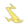

Fallen Rosemary
Ранг валькирии:
Тип:
Вид урона:
Fallen Rosemary валькирия квантового типа которая специализируется на поддержке валькирии которые наносят электрический урон

При попадании Гармр создает Руну Ульфа: враги рядом с Падшей Розмари получают 15,0% дополнительного урона от молнии, становятся ослабленными, наносят на 30,0% меньше урона и страдают от уменьшенного прерывания на 15 секунд. (Гармра можно вызвать с помощью 3-й последовательности базовой АТК в форме Вальфрейи и QTE.)
При попадании Линнорм создает Руну Ормра: враги рядом с Падшей Розмари поражаются молнией и получают 50,0% Атаки Молниеносного Урона в секунду в течение 15 секунд.
При попадании Стрикс создает Руну Стрикс: Команда наносит 15,0% дополнительного урона Молнии и восстанавливает 0,5 SP в секунду в течение 15 секунд.